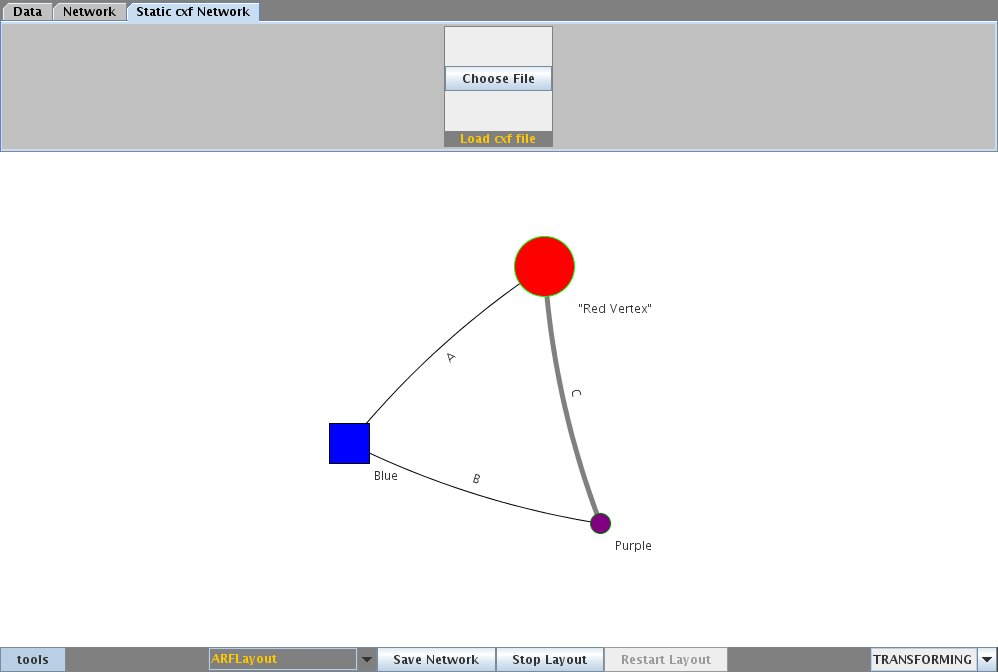
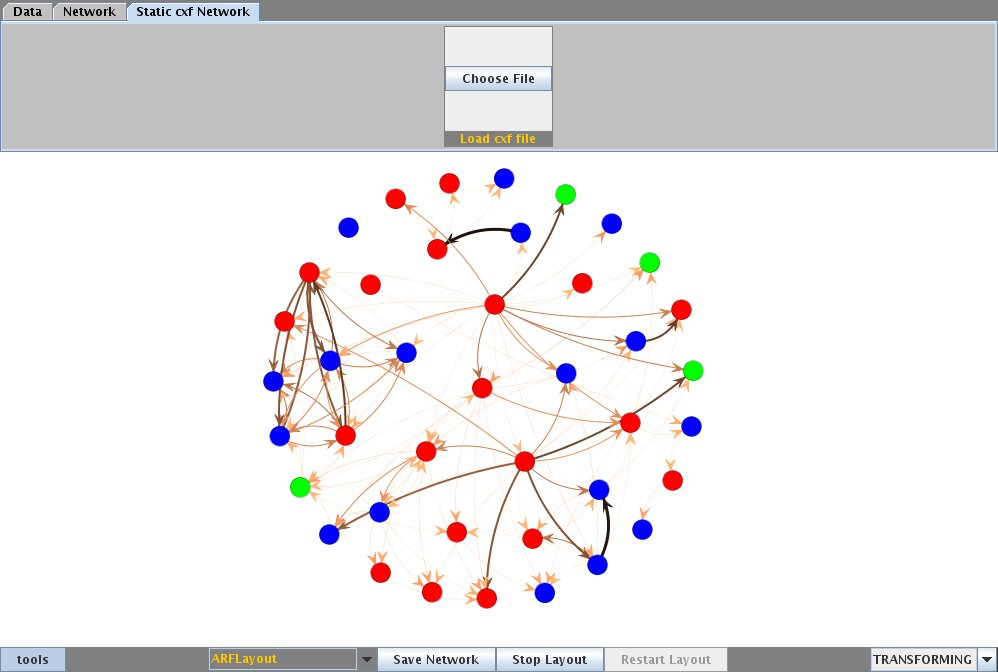
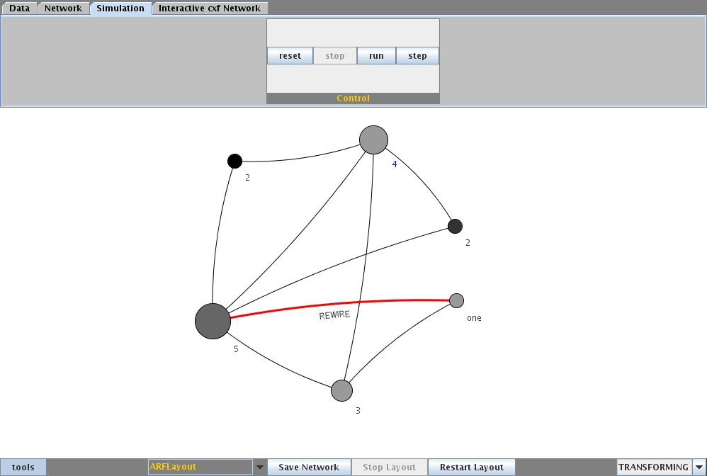
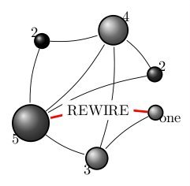
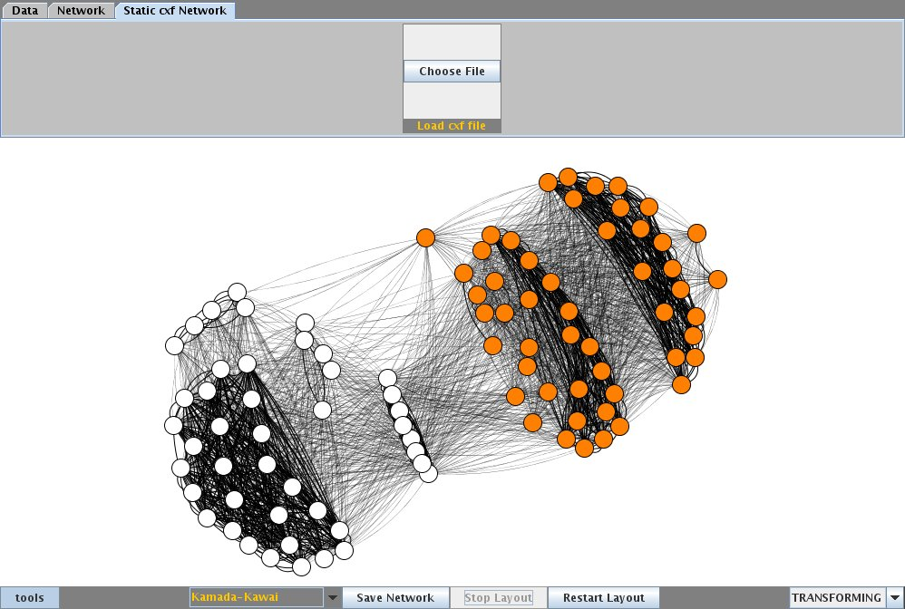

The Project
Cuttlefish is a network workbench application that visualizes the networks with some of the best known layout algorithms. It allows detailed visualizations of the network data, interactive manipulation of the layout, graph edition and process visualization as well as different input methods and outputs in tex using Tikz and PSTricks. It is developed by the Chair of Systems Design of ETH Zürich , a research group that applies a complex system approach to investigate economic and social networks.
Start using Cuttlefish
Right now cuttlefish is only compatible to UNIX systems with the Java Runtime Environment 1.6 installed. You can download the latest version of Cuttlefish from our sourceforge project site and the configuration and datasource XML files. Then cd to your downloads directory and run:
java -jar cuttlefish.jar
To get the maximum out of Cuttlefish, visit our Manuals and Tutorials and for problems, questions or requests, get support.
Cuttlefish File Formats
To represent network data and visualisation details, Cuttlefish uses two new file formats. The first, Cuttlefish eXtended Format (cxf) defines network data like vertices, edges, weights and visualization information like labels, colors and shapes. The second file format is Cuttlefish Evolution Format (cef) that defines the changes happening in a network, which can be used to visualize network processes and algorithms. Cuttlefish is compatible with older file formats like Pajek and GraphML too.
Screenshots
 {kind=link}
{kind=link}
Visualizations with the ARF layout algorithm
 {kind=link}
{kind=link}
Evolution and export to tikz
{kind=link}
Kamada-Kawai layout for communities
Join the project
Cuttlefish is an open source project part of sourceforge published under GNU General Public License. To join the project visit our sourceforge project page.